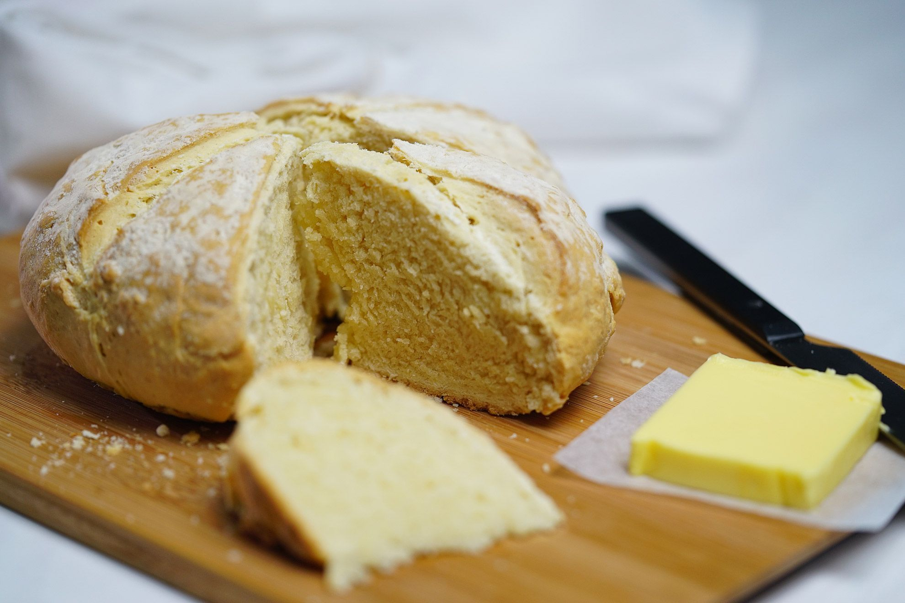

Damper
really simple soda bread which bakes in 10 minutes. Damper bread is perfect served with lashings ...

Ingredients
250 g self-raising flour (plus extra for dusting surface)
50 g unsalted butter (cubed)
1/2 tsp salt
100 ml whole milk
50 ml water
Damper is a thick homemade soda bread traditionally prepared by early European settlers in Australia.[1] The
bread is different to bush bread, which has been made by Indigenous Australians for thousands of years and was
traditionally made by crushing a variety of native seeds, nuts and roots, mixing into a dough, and then baking
the dough in the coals of a fire.[2][3][4] There is ongoing investigation into whether this technique of various
Aboriginal peoples influenced the development of colonial-era damper, similarly cooked in the ashes of a camp
fireDamper is a bread made from wheat-based dough. Flour, salt and water, with some butter if available, is
lightly kneaded and baked in the coals of a campfire, either directly, or within a camp oven.[8] When cooked as
smaller, individually-sized portions, these damper "bush scones" are often called "johnny cakes".[9][10][11] It
is uncertain if this name was influenced by the term for North American cornmeal bread. However, Australian
johnny cakes, while often pan-fried, remain wheat-based.